速览
《大乱斗》的攻击不是给对方伤害、把攻击力从体力中减掉那么简单；因为「击飞」的游戏性，可以做些独特设定。前提：攻击方攻击力越高、被打方累积伤害越高，就飞得越远。矢量设定击飞方向：其他格斗游戏也有，但多为有限几个方向，《大乱斗》可以全方位细致个别设定；还能用特殊设定让方向稍微沿着攻击方的移动修正，用于空中连段等，抬高角度、减少「脱手」。同条件下，击飞后的实际轨迹也会因被打方的下落加速度和重量而变。反应影响值：命中时给击飞大小乘倍率，可以做出「攻击力高但不怎么飞」或相反，更细地控制击飞。反应加算值：无条件加到反应上的击飞力——例如体力低时上挑也飞不高，完全没反应很麻烦，所以担保一定程度的击飞力；但单纯加算会飞得太远，所以多与反应影响值并用压住。反应固定值：与上述无关，完全固定反应，无论受了多少伤害都一样。例如马力欧的超级跳跃拳，连续命中时用固定反应，只有最后一发是普通击飞——否则对方伤害太低或太高时会打不中。这套参数构成从初代《大乱斗》就有：它的规则与普通游戏不同，要做得好玩需要下功夫。攻击参数其实还有更多要素，本次只挑重点。
1. 击飞是游戏核心 0:02
《大乱斗》的攻击，不是给对方伤害、把攻击力从体力中减掉那么简单。因为「击飞」这种游戏性，可以做些独特的设定。这次解说攻击参数中与击飞相关的部分。
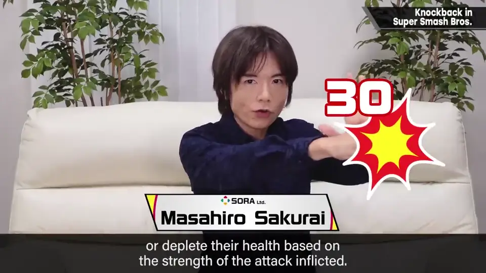
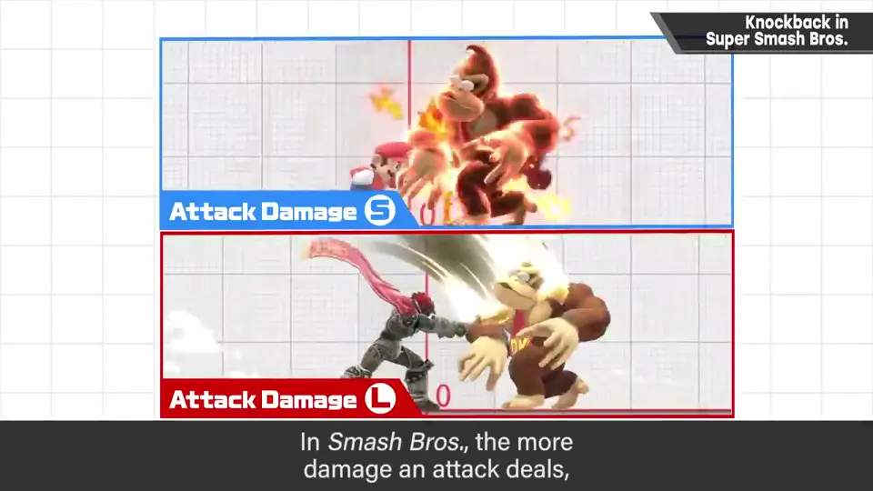
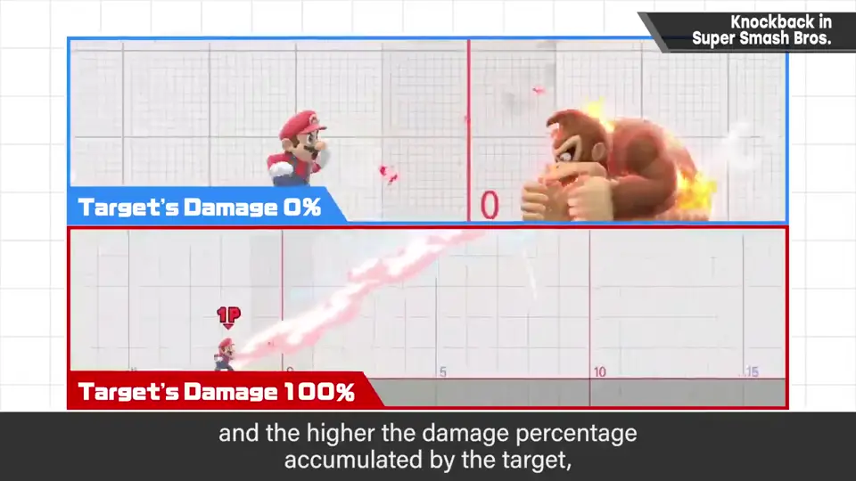
2. 矢量 0:46
设定把对手击飞的方向。其他格斗游戏有时也有，但只限几个方向；《大乱斗》可以全方位细致地个别设定。
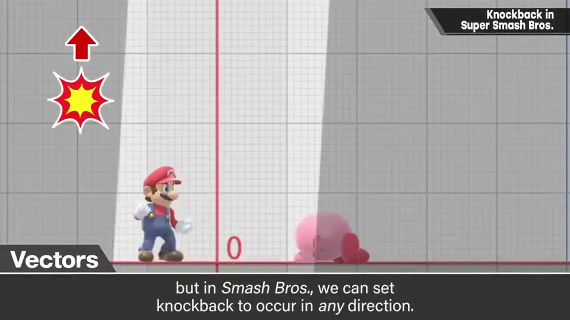
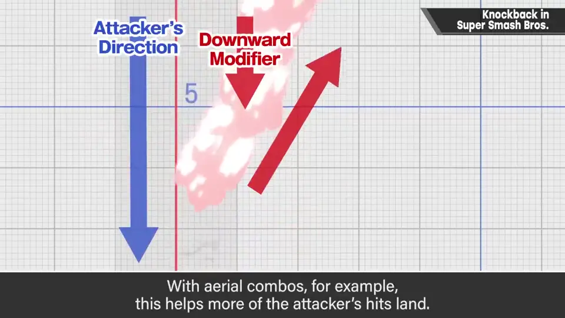
还可以用一些特殊设定，让方向稍微沿着攻击方的移动去修正。这样空中连段等会把角度抬高、减少「脱手」。
另外，同样条件下，击飞后的实际轨迹也会因被打方斗士的下落加速度和重量而改变。
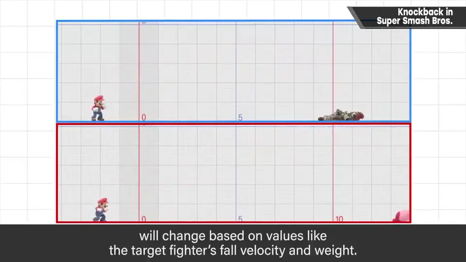
3. 反应影响值 1:24
命中时给击飞大小乘一个倍率。可以设定「攻击力高但不太飞」或相反，从而更精细地控制击飞。
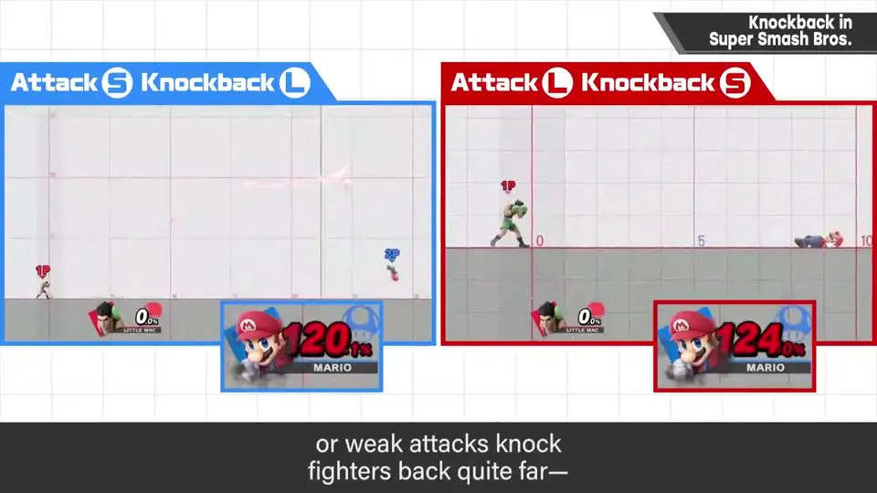
4. 反应加算值 1:40
无条件加到反应上的击飞力。例如对方体力还低时，上挑攻击也不会飞很高；完全没反应会很麻烦，所以要担保一定程度以上的击飞力。
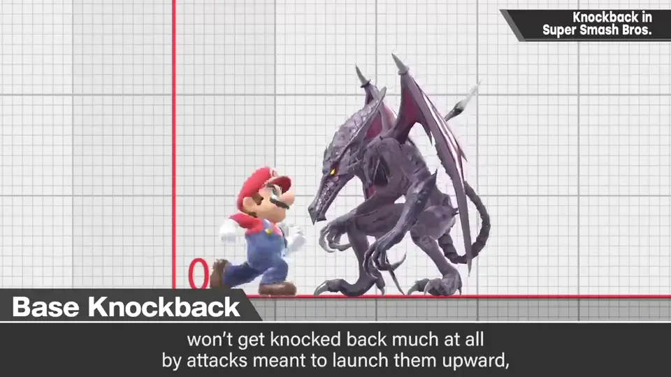
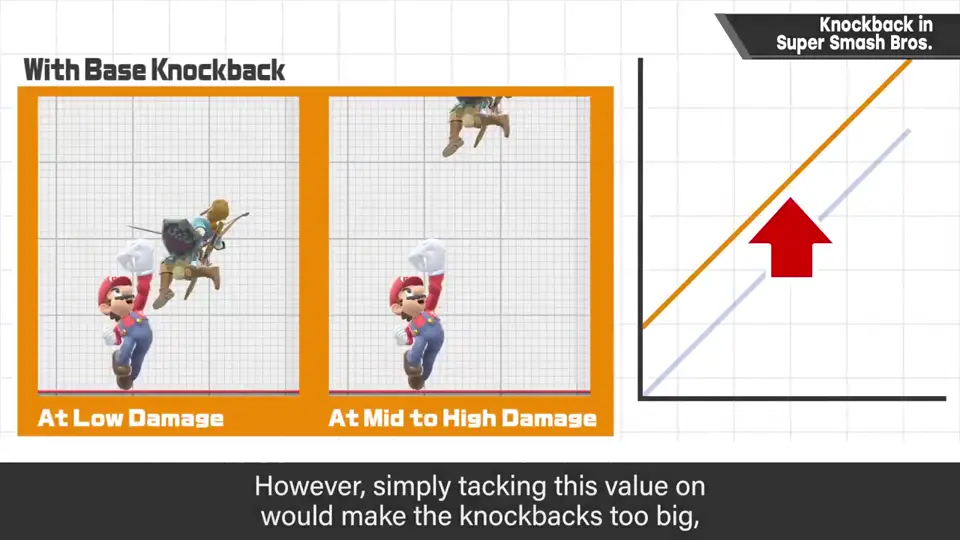
5. 反应固定值 2:16
与以上都无关，把反应完全固定：不论受了多少伤害，都得到完全相同的反应。
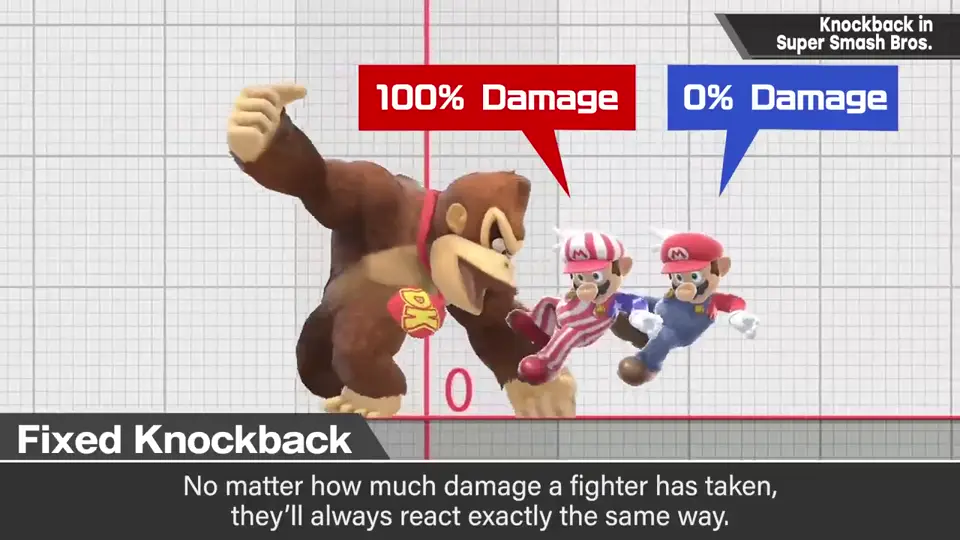
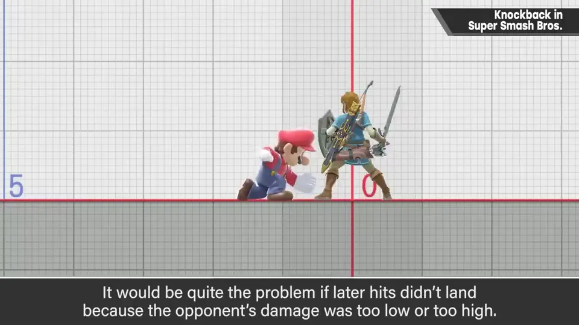
例如马力欧的超级跳跃拳：连续命中时用固定反应，只有最后一发是普通击飞。否则对方伤害太低或太高时就会打不中后续。
6. 从初代就开始 2:50
这些参数构成从初代《大乱斗》就有了。毕竟它拥有和普通游戏不同的异质规则，要把它做成好玩的游戏需要下一番功夫。
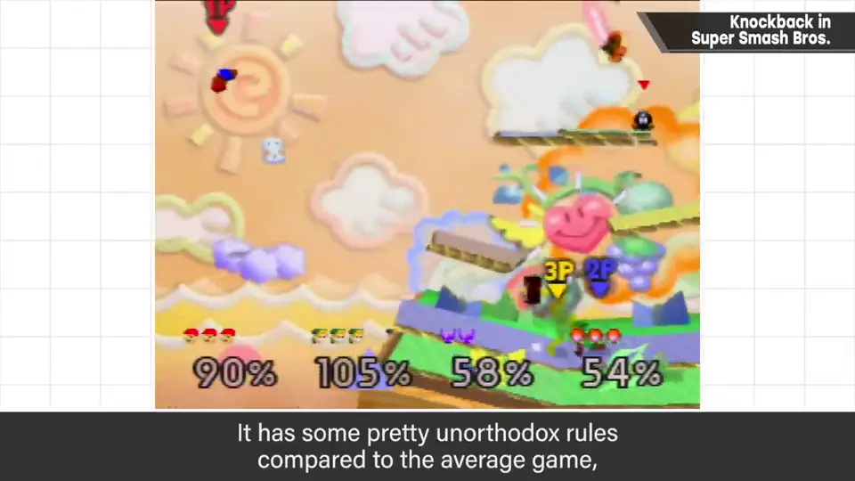
攻击参数其实还有更多要素，这次只挑重点说明。
自测题
1. 《大乱斗》中什么决定被击飞得多远？
攻击方的攻击力越高、被打方累积伤害越高，飞得越远。 0:32
2. 反应加算值的作用是什么？为何常与影响值并用？
无条件加击飞力，保证低伤害时也有一定反应；单纯加算会太大，所以用影响值压住。 1:40
3. 超级跳跃拳为什么连续命中部分用固定反应？
否则对方伤害太低或太高时后续会打不中；固定反应保证连段，只有最后一发正常击飞。 2:30